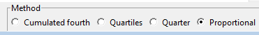
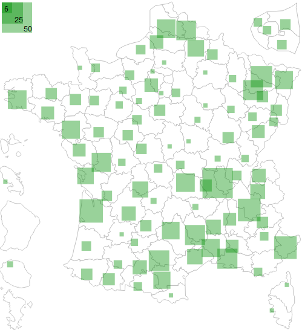
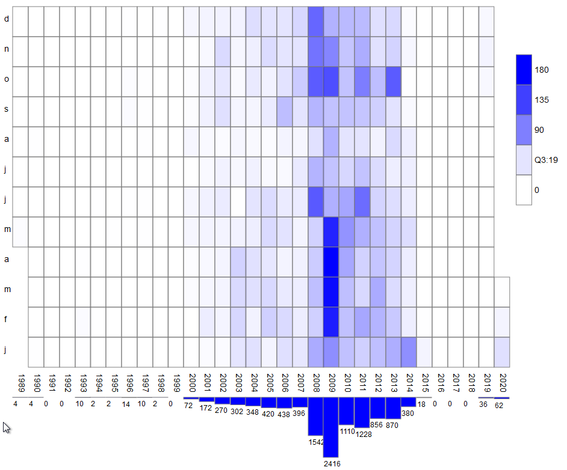
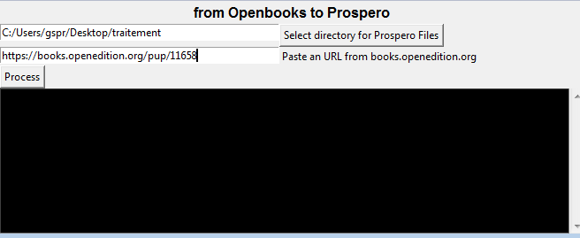

On utilise l'appellation Tirésias pour dénommer d'un coup toutes les fonctionnalités connexes à l'usage de Prospéro, Chéloné et Marlowe. Un certain nombre de celles-ci sont regroupées dans une interface graphique qui vise à rendre leur usage plus aisé.
Une première version a été développée en Python2 au début de la décennie 2010. Le support de Python2 s'arrêtant début 2020, il est recommandé de passer à Python3, ce que j'ai fait pour les scripts présents, en les nettoyant et les corrigeant au passage et en révisant l'interface graphique. Comme pour la première version, le pari est d'utiliser la bibliothèque graphique Tk qui est installée par défaut avec Python, ceci afin d'être plus accessible puisqu'il n'y a rien de spécial à installer.
Pour faciliter encore la vie des utilisateurs des versions exécutables existent pour windows :
Le code est disponible sur github : https://github.com/josquindebaz/Tiresias
.Allez sur https://www.python.org/
Dans le menu Download, sélectionnez windows.
Si vous êtes sur une version récente de Windows, choisissez la dernière version de Python Latest Python 3 Release
Si vous êtes sur une vieille version de Windows, comme XP, il vous faudra Python 3.4, téléchargez Windows x86 MSI installer, si ce dernier lien ne fonctionne pas descendez dans la page du site de Python jusqu'à trouver Python 3.4.3 - Feb. 25, 2015.
Installez. (Je vous conseille d'activer add Python 3.x au PATH)
Récupérez le code de Tiresias, soit via git, soit en zip : https://github.com/josquindebaz/Tiresias/archive/master.zip
Un double-clic sur Tiresias.py pour le lancer.
À l'ouverture un texte d'accueil et une vérification que vous avez bien la dernière version qui s'affiche en bas (si vous accès à Internet)

Dans le menu Files, vous trouvez :

Les fonctionnalités présentes :
Notes sur la structure du dépôt, vous trouverez dans les répertoires :
Dans le menu File, la commande List .txt vous donne accès à une nouvelle fenêtre :

voici comme il s'utilise :
Le cadre Replace path vous permet de faire des remplacements dans cette liste.
Cela peut être utile si vous utilisez un autre OS, par exemple ici remplacer /home/josquin/ par C:\, ainsi que les / par des \ afin de générer une liste directement compatible avec Prospéro
Certains caractères ne sont pas reconnus par Prospéro 1. Dans le menu Corrections, la commande Character cleaning en corrige un certain nombre.

Sélectionnez votre dossier et lancez le traitement avec Process cleaning, vos fichiers .txt seront modifiés. La case à fond noir vous commente l'opération.
Les options :
Dans le menu Corrections, la commande Word Replace permet de remplacer des motifs dans tous les .txt d'un dossier.

Sélectionnez le dossier dans lequel vos changements doivent être effectués.
Avec le bouton Add, ajoutez des motifs à remplacer, ils se placent dans la liste de gauche. Il peut y en avoir plusieurs.
Ils seront tous remplacés par le motif que vous placez dans le champ central.
Cliquez sur Replace. La case sur fond noir du bas vous commente les opérations.
Dans l'exemple affiché, nous souhaitons remplacer "broadest range" et "largest range" par "smallest range", le commentaire indique qu'il a trouvé 5 fichiers .txt dont 1 dans lequel un des motifs à remplacer apparaissait. Il a donc édité un fichier.
Les options :
La liste de droite montre l'historique des motifs utilisés. Avec Recall, vous pouvez directement repeupler les listes avec de précédents motifs.
Dans le menu Projects, la commande filtrer vous permet de filtrer un corpus par rapport à des mots clefs.

Tout d'abord choisissez votre .prc (ne fonctionne que sur Windows) ou votre dossier, il va établir la liste des fichiers correspondante.
La case en bas à droite sur fond noir commente les actions.
En bas à gauche, dans le cadre Theme, listez les termes que vous voulez chercher (avec les boutons add et del).
Evidemment, si des mots sont déjà présents et qu'ils ne vous intéressent pas, il faut les enlever.
Définissez ensuite les valeurs souhaitées : score total et composants.
Par exemple 7 et 2 : pour valider un texte, il faut qu'il contienne au moins 2 mots différents du thème et comptent au moins 7 occurrences des mots du thème.
En cliquant sur theme evaluation, les deux cases du haut vont se peupler :
Il indique le chemin du texte, puis les mots clefs trouvés et leur nombre d'occurrence.
Avec les boutons save, on enregistre les listes de gauche ou de droite, dans un nouveau .prc, avec les même paramètres (dictionnaires et langues) que le .prc fourni au départ.
Évidemment, si vous êtes filtrez un dossier et non un .prc, il n'y aura pas de paramètres dans le .prc enregistré.
Située dans le menu Databases, la commande Questions parlementaires vous permet de générer des fichiers .txt et .ctx pour constituer un corpus pour Prospéro à partir des moteurs de recherche du Sénat (http://www.senat.fr/quesdom.html) et de l'Assemblée (http://www2.assemblee-nationale.fr/recherche/questions).

Dans le champ keywords, entrez le(s) mot(s) clef(s), entre guillemets " si nécessaire.
Indiquez à gauche, l'intervalle temporel de recherche pour le Sénat (mettez deux fois la même date si vous ne voulez rien venant du Sénat.
Sélectionnez à droite les législations qui vous intéressent à l'Assemblée.
Ensuite, cliquez sur Search. En bas, dans la case noire s'affichent des commentaires sur le processus.
Les listes se remplissent avec les questions qui correspondent à votre recherche. Elles informent de la date de la question, de son numéro et éventuellement de son type (QE = question écrite), ainsi que de l'existence d'une réponse par le gouvernement (R).
En double cliquant sur une question en particulier, votre navigateur ouvrira la page web correspondant à la question.
Sélectionnez les questions qui vous intéressent, renseignez le dossier d'écriture des fichiers .txt et .ctx.
Lancer la procédure avec le bouton Process. Si clean texts est cochée, le processus opérera un nettoyage des caractères (comme si vous utilisiez la fonctionnalité avec toutes les options, voir le mode d'emploi spécifique supra)
Dans le menu dataviz, la commande QP Atlas, génère une carte des départements d'élection des parlementaires d'un corpus de questions parlementaires.
Dans Prospéro, à partir d'un corpus de questions parlementaires généré avec le script de Tirésias, entrez par Appuis externe -> lieux d'émissions

Copiez la liste fournie avec le clic contextuel (droit sur Windows) et renseignez une valeur suffisante pour tout récupérer (par exemple 200)

Dans QP Atlas de Tiresias, collez la liste, soit par CTRL-V soit par le bouton Paste

Le programme prend en compte ligne par ligne les valeurs composées selon la forme : Département[tabulation]valeur
Cliquez sur Draw atlas, une carte des départements de France est générée en .svg, choisissez où vous voulez l'enregistrer. Votre navigateur par défaut va l'ouvrir dans la foulée.
En passant votre pointeur sur un département, l'infobulle vous en donne les détails : (no de département) nom de département valeur

La méthode par défaut est celle des quarts des valeurs cumulées, c'est généralement la plus informative pour ce genre de données.
Si vous préférez vous pouvez générer une légende en quartiles.
Ici 25% des valeurs sont entre 1 et 3, 25% entre 4 et 6, 25% entre 7 et 12, et 25% entre 13 et 50.

ou même en divisant en quatre parts égales les valeurs.
Ici 50 divisé par 4 = 12,5, on a donc une légende avec les valeurs : de 1 à 12, de 13 à 23 (il n'y a pas de département avec 24), de 25 à 30 (il n'y a pas de valeur entre 30 et 37,5) et 50 (il n'y a pas de valeur entre 37,5 et 50)

Pour approfondir la question du choix de la génération de l'échelle, voir Un atlas des questions parlementaires sur le carnet de recherches Socioinformatique et argumentation
Méthodologiquement, on recommande ce type de représentation (choroplèthe) pour des densités, c'est-à-dire des valeurs rapportées à la même mesure (par exemple un indicateur pour 100 000 habitants). Or, ici, nous représentons des valeurs absolues et discontinues. Ayez bien à l'esprit que si ces cartes ont une valeur heuristique pour visualiser des zones régionales qui s'agrègent ou se démarquent de leurs voisines, la carte peut vous amener à voir ces valeurs comme comparables à l'unité près (alors que tous les départements n'ont pas le même nombre de parlementaires et que les parlementaires ne posent pas le même nombre de question) et même à vous représenter les données comme discrètes.
Aussi, un autre rendu est proposé par le logiciel, avec des carrés proportionnels centrés sur les préfectures.
Si vous entendez diffuser un document, utilisez cette méthode, moins sujette à ces biais de lecture (elle en présente d'autres et partage celui de lier à un espace géographique différent l'agrégation au cours du temps de questions posées dans des institutions nationales).
Pour essayer d'être le moins déformant dans la perception, on utilise des carrés plutôt que des cercles, et des surfaces proportionnelles.
Dans Dataviz, la commande Cited years timeline s'utilise de la façon suivante :
Dans Prospéro, ouvrez la fenêtre des formules (dans le menu inférences).

Dans Cited years timeline de Tirésias.

Dans votre tableur préféré, collez dans la première case avec CTRL-V (les valeurs sont séparées par une tabulation)
Sélectionnez les deux colonnes, insérez un graphique/diagramme en définissant la première colonne comme étiquette.

Pour générer les fichiers .txt et .ctx à partir d'une recherche dans la base de données Europresse.
Vous devez évidemment avoir un accès Europresse, de nombreux établissements universitaires en France sont abonnés.
Il vous faut passer par la version classique, sur la page Europresse, elle se trouve en haut à droite, tant quelle existe...

Effectuez votre recherche. Sélectionnez les textes qui vous intéressent, puis cliquez sur la disquette pour sauvegarder au format HTML.

Attention :
Dans Tiresias, menu Databases, choisissez la commande Europresse.

Month heatmap permet de générer une frise chronologique du nombre de textes par mois dans un corpus.
Dans Prospéro, dans le menu Temporalités, sélectionner Temps du corpus et spécifier l'unité en mois. Le logiciel envoie au presse-papier un tableau avec en première colonne le mois et en seconde colonne le nombre de textes correspondant.
Une fois obtenu le message confirmant cette copie, dans Tirésias, dans le menu Dataviz, sélectionner Month heatmap.
Coller le tableau.

Cliquer sur Draw heatmap et enregistrer le fichier svg à l'endroit souhaité. Votre navigateur par défaut s'ouvre pour afficher l'image générée.
Vous obtenez une grille avec en abscisse les années, en ordonnée les mois, la case est foncée proportionnellement au nombre relatif de textes du mois. À droite, la légende indique les valeurs min et max et des intensités au quart ou aux quartiles des valeurs. Dans l'exemple infra, elle indique que le 3e quartile (Q3) est à 19, c'est-à-dire que 75% des mois sont en-dessous et 25% au-dessus.
Sous la grille, un histogramme affiche le nombre annuel de textes.
En passant le pointeur sur les cases, s'affichent mois/années et valeur.
Case change permet de transformation la casse des mots dans les textes.

Attention, les changements sont irréversibles, n'hésitez pas à faire une sauvegarde des .txt de votre corpus avant d'utiliser cette fonction ou à travailler sur une copie temporaire.
Permet de transformer des livres déposés sur https://books.openedition.org
accès dans Databases -> books.openeditions
indiquez le dossier d'enregistrement des txt et ctx
indiquez l'url de la page à traiter
cliquez sur Process
c'est une première version, merci de faire remonter les erreurs